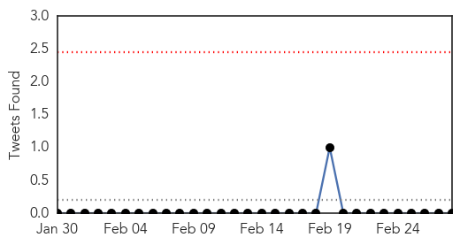

MERS
30-Day Web Trend
1 alerts, 0 warnings
30-Day Twitter Trend
0 alerts, 0 warnings

Article Locations

Article Confidences

Top Articles:
Top Tweets:
-
No tweets found for Feb 28, 2014
Measles
30-Day Web Trend
2 alerts, 0 warnings
30-Day Twitter Trend
0 alerts, 0 warnings

Article Locations

Article Confidences

Top Articles:
- 0.966
- Two relatives of infected UC Berkeley student have measles, health officials say
- 0.955
- 2 Relatives of Infected UC Berkeley Student Contract Measles
- 0.930
- Two relatives of UC Berkeley student who contracted measles have come down with the disease
- 0.842
- Plane passenger sparks new measles alert
- 0.747
- Relatives Of Infected UC Berkeley Student Diagnosed With Measles « CBS San Francisco
Top Tweets:
-
No tweets found for Feb 28, 2014